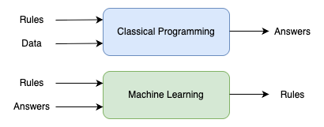
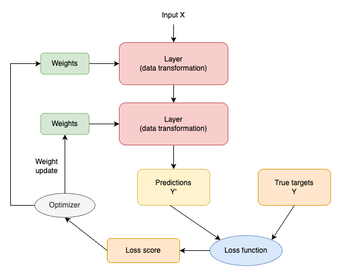
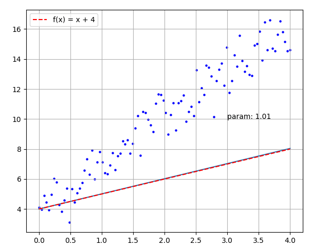
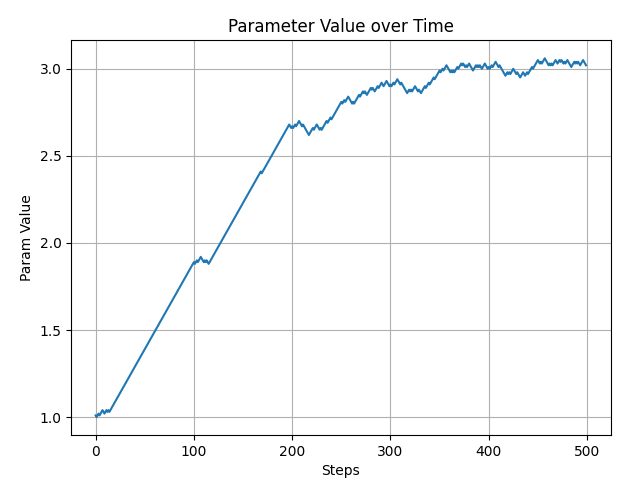

1.4 Principles of Deep Learning
Created Date: 2025-05-10
In this tutorial, we will explore the fundamental principles of deep learning, including the concepts of machine learning, rules and representations, neural networks, and optimization techniques such as gradient descent. Understanding these principles is crucial for building and training effective deep learning models.
1.4.1 Machine learning
The usual way to make a computer do useful work is to have a human programmer write down rules — a computer program — to be followed to turn input data into appropriate answers.
File classical_program.py can enter the user's age and income to determine whether to lend him a loan.
def check_loan_eligibility(age, income):
if age < 18 or age > 65:
return 'NO'
if income < 30000:
return 'NO'
return 'YES'
age = int(input('Please enter age: '))
income = float(input('Please enter income: '))
eligibility = check_loan_eligibility(age, income)
print(eligibility)Please enter age: 30 Please enter income: 23000 NO
Machine learning turns this around: the machine looks at the input data and the corresponding answers, and figures out what the rules should be:

Figure 1 - Paradigm of Machine Learning
A machine learning system is trained rather than explicitly programmed. It’s presented with many examples relevant to a task, and it finds statistical structure in these examples that eventually allows the system to come up with rules for automating the task. For instance, if you wished to automate the task of tagging your vacation pictures, you could present a machine learning system with many examples of pictures already tagged by humans, and the system would learn statistical rules for associating specific pictures to specific tags.
Although machine learning only started to flourish in the 1990s, it has quickly become the most popular and most successful subfield of AI, a trend driven by the availability of faster hardware and larger datasets. Machine learning is related to mathematical statistics, but it differs from statistics in several important ways, in the same sense that medicine is related to chemistry but cannot be reduced to chemistry, as medicine deals with its own distinct systems with their own distinct properties.
Unlike statistics, machine learning tends to deal with large, complex datasets (such as a dataset of millions of images, each consisting of tens of thousands of pixels) for which classical statistical analysis such as Bayesian analysis would be impractical. As a result, machine learning, and especially deep learning, exhibits comparatively little mathematical theory—maybe too little—and is fundamentally an engineering discipline.
Unlike theoretical physics or mathematics, machine learning is a very hands-on field driven by empirical findings and deeply reliant on advances in software and hardware.
1.4.2 Learning Rules and Representations from Data
To define deep learning and understand the difference between deep learning and other machine learning approaches, first we need some idea of what machine learning algorithms do. We just stated that machine learning discovers rules for executing a data processing task, given examples of what’s expected. So, to do machine learning, we need three things:
Input data points - For instance, if the task is speech recognition, these data points could be sound files of people speaking. If the task is image tagging, they could be pictures.
Examples of the expected output - In a speech-recognition task, these could be human-generated transcripts of sound files. In an image task, expected outputs could be tags such as "dog", "cat" and so on.
A way to measure whether the algorithm is doing a good job - This is necessary in order to determine the distance between the algorithm’s current output and its expected output. The measurement is used as a feedback signal to adjust the way the algorithm works. This adjustment step is what we call learning .
A machine learning model transforms its input data into meaningful outputs, a process that is "learned" from exposure to known examples of inputs and outputs. Therefore, the central problem in machine learning and deep learning is to meaningfully transform data: in other words, to learn useful representations of the input data at hand—representations that get us closer to the expected output.
Before we go any further: what’s a representation? At its core, it’s a different way to look at data—to represent or encode data. For instance, a color image can be encoded in the RGB format (red-green-blue) or in the HSV format (hue-saturation-value): these are two different representations of the same data.
Some tasks that may be difficult with one representation can become easy with another. For example, the task "select all red pixels in the image" is simpler in the RGB format, whereas "make the image less saturated” is simpler in the HSV format. Machine learning models are all about finding appropriate representations for their input data—transformations of the data that make it more amenable to the task at hand.
1.4.3 The "Deep" in Deep Learning
Deep learning is a specific subfield of machine learning: a new take on learning representations from data that puts an emphasis on learning successive layers of increaingly meaningful representations. The "deep" in "deep learning" isn't a reference to any kind of deeper understanding achieved by the approach; rather, it stands for this idea of successive layers of representations.
How many layers contribute to a model of the data is called the depth of the model. Other appropriate names for the field could have been layered representations learning or hierarchical representations learning. Modern deep learning often involves tens or even hundreds of successive layers of representations, and they’re all learned automatically from exposure to training data.
Meanwhile, other approaches to machine learning tend to focus on learning only one or two layers of representations of the data (say, taking a pixel histogram and then applying a classification rule); hence, they’re sometimes called shallow learning.
In deep learning, these layered representations are learned via models called neural networks, structured in literal layers stacked on top of each other. The term "neural network" refers to neurobiology, but although some of the central concepts in deep learning were developed in part by drawing inspiration from our understanding of the brain (in particular, the visual cortex), deep learning models are not models of the brain.
There’s no evidence that the brain implements anything like the learning mechanisms used in modern deep learning models. You may come across pop-science articles proclaiming that deep learning works like the brain or was modeled after the brain, but that isn’t the case.
It would be confusing and counterproductive for newcomers to the field to think of deep learning as being in any way related to neurobiology; you don’t need that shroud of "just like our minds" mystique and mystery, and you may as well forget anything you may have read about hypothetical links between deep learning and biology. For our purposes, deep learning is a mathematical framework for learning representations from data.
What do the representations learned by a deep learning algorithm look like? At the end of 2015, the paper Deep Residual Learning for Image Recognition proposed a residual network, which achieved an error of 3.57% on the ImageNet test set. Let's see how the model recognizes a cat. Consider a photo of a cat, 224 x 224 pixels in size, as shown below:
Figure 2 - Cat Image
File cnn_activation_visual.py quickly introduce trained models:
# Build a ResNet50V2 model loaded with pre-trained ImageNet weights
model = keras.applications.ResNet50V2(weights="imagenet")
model.summary()The network has 192 layers and 25,613,800 parameters. When the neural network is given the image above, it predicts with a 93% probability that it is a Siamese cat.
1: Siamese_cat (0.93) 2: lynx (0.05) 3: Egyptian_cat (0.02)
Looking at the intermediate output process of the neural network, we can clearly see that as the number of layers increases, the output becomes increasingly difficult to recognize, and outputs abstract information that is difficult for humans to understand.
# visual hidden layer
layer_outputs = []
layer_names = []
for index, layer in enumerate(model.layers):
if isinstance(layer, keras.layers.Conv2D) and index % 5 == 0:
layer_outputs.append(layer.output)
layer_names.append(f"Layer {index+1} - {layer.name}")
activation_model = keras.Model(inputs=model.input, outputs=layer_outputs)
activations = activation_model.predict(img_tensor)
os.makedirs("temp", exist_ok=True)
for layer_name, activation in zip(layer_names, activations):
print(activation.shape)
pyplot.matshow(activation[0, :, :, 0])
pyplot.title(layer_name)
pyplot.axis("off")
pyplot.savefig(os.path.join("temp", layer_name + ".png"))
# pyplot.show()
pyplot.close()So that’s what deep learning is, technically: a multistage way to learn data representations. It’s a simple idea—but, as it turns out, very simple mechanisms, sufficiently scaled, can end up looking like magic.
1.4.4 Understanding How Deep Learning Works
At this point, you know that machine learning is about mapping inputs (such as images) to targets (such as the label "cat"), which is done by observing many examples of input and targets. You also know that deep neural networks do this input-to-target mapping via a deep sequence of simple data transformations (layers) and that these data transformations are learned by exposure to examples. Now let’s look at how this learning happens, concretely.
The specification of what a layer does to its input data is stored in the layer's weights, which in essence are a bunch of numbers. In technical terms, we’d say that the transformation implemented by a layer is parameterized by its weights. (Weights are also sometimes called the parameters of a layer.)
In this context, learning means finding a set of values for the weights of all layers in a network, such that the network will correctly map example inputs to their associated targets. But here’s the thing: a deep neural network can contain tens of millions of parameters. Finding the correct values for all of them may seem like a daunting task, especially given that modifying the value of one parameter will affect the behavior of all the others!
To control something, first you need to be able to observe it. To control the output of a neural network, you need to be able to measure how far this output is from what you expected. This is the job of the loss function of the network, also sometimes called the objective function or cost function.
The loss function takes the predictions of the network and the true target (what you wanted the network to output) and computes a distance score, capturing how well the network has done on this specific example.

Figure 3 - Relationship between the Network
The fundamental trick in deep learning is to use this score as a feedback signal to adjust the value of the weights a little, in a direction that will lower the loss score for the current example.
This adjustment is the job of the optimizer, which implements what’s called the Backpropagation algorithm: the central algorithm in deep learning.
Initially, the weights of the network are assigned random values, so the network merely implements a series of random transformations. Naturally, its output is far from what it should ideally be, and the loss score is accordingly very high. But with every example the network processes, the weights are adjusted a little in the correct direction, and the loss score decreases.
This is the training loop, which, repeated a sufficient number of times (typically tens of iterations over thousands of examples), yields weight values that minimize the loss function. A network with a minimal loss is one for which the outputs are as close as they can be to the targets: a trained network. Once again, it’s a simple mechanism that, once scaled, ends up looking like magic.
1.4.5 Simple Example
Now that we have introduced the principles of neural networks, we can look at a very simple example. It is to find the best fitting curve for some randomly distributed points. The file simple_train_anim.py plots the distribution of points, as shown below:
LEARN_RATE = 0.01
EPOCHS = 5
rng = numpy.random.default_rng(seed=0)
random_numbers = rng.standard_normal(size=100)
x_input_array = numpy.linspace(0, 4, 100)
y_true_array = 3 * x_input_array + 4 + random_numbersUsing traditional methods, we calculate the distance from each point to the line, convert it into a function of the slope, and find the minimum value of the function to get the fitted line. However, this calculation process is complicated. We can use deep learning to find an approximate line. The steps are as follows:
Set the line \(y = param * x + 4\) , the initial value of param is 1.0;
For each input point \((x, y)\), using \(y = param * x + 4\) , calculate the predicted value \(y'\);
Compared \(y'\) with true value \(y\), if \(y' \gt y\), \(param = param - 0.01\) ; else if \(y' \lt y\), then \(param = param + 0.01\) ;
Repeat process 2 and 3 until param becomes stable (the random points can be traversed for multiple rounds).
Convert the above process into executable code:
param = 1.0
history = []
for _ in range(EPOCHS):
for index, x_input in enumerate(x_input_array):
y_pred = param * x_input + 4
if y_pred < y_true_array[index]:
param += LEARN_RATE
else:
param -= LEARN_RATE
history.append(param)The final calculated param value is 3.02, and the drawn image is shown below:

Figure 4 - Simple Training Animation
The following figure shows the slope changes throughout the entire process. When the slope reaches 3, it gradually stabilizes. During training, we can use this signal to determine whether to end training:

Figure 5 - Simple Training Parameter